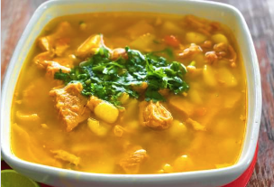

Un delicioso plato de mondongo servido con arroz y aguacate.
El mondongo es uno de los platos más tradicionales y populares de la gastronomía colombiana. Su historia y preparación lo convierten en un ícono de la cocina criolla.
"Un buen mondongo es sinónimo de hogar y tradición en Colombia."
Origen e Historia
Se dice que el origen de esta preparación está en el “mote pelado” de Perú. Con el tiempo y la llegada de los españoles, el plato evolucionó hasta convertirse en lo que es hoy.
El ingrediente principal es la panza o estómago de vaca, cortado en cuadritos, de ahí su nombre. En algunos lugares, se le añade carne y costilla de cerdo.
Ingredientes del Mondongo
Panza de res (mondongo), bien lavado y troceado.
Costilla de cerdo (opcional).
Papa criolla y papa capira.
Zanahoria, arvejas y yuca.
Hogao (mezcla de cebolla y tomate sofritos).
Sal, comino y ajo al gusto.
Cómo Preparar el Mondongo
Lava muy bien la panza de res con agua y limón.
Corta la panza en pequeños cubos y ponla a cocinar en una olla con suficiente agua.
Añade la costilla de cerdo y deja cocinar hasta que esté tierna.
Incorpora la papa criolla, la zanahoria, la yuca y las arvejas.
Prepara el hogao aparte y agrégalo a la olla para darle sabor.
Deja cocinar a fuego medio por unos 40 minutos más.
Sirve caliente acompañado de arroz, aguacate y arepa.
Curiosidades del Mondongo
Dato
Descripción
Región
Preparado en toda Colombia, con variaciones en cada región.
Acompañantes
Se suele servir con arroz, aguacate y arepa.
Sabor
Una mezcla entre lo cremoso de las papas y el sabor fuerte del mondongo.
Popularidad
Es uno de los platos más vendidos en restaurantes típicos colombianos.